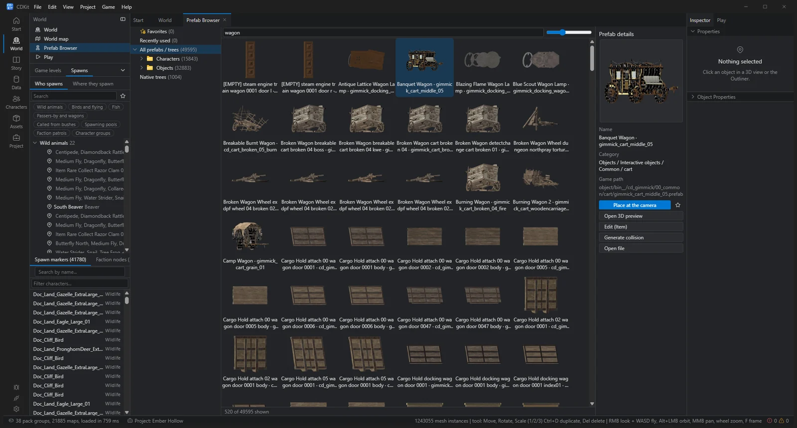
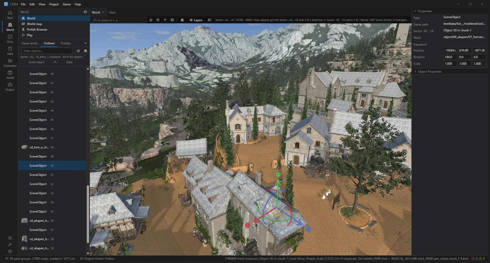
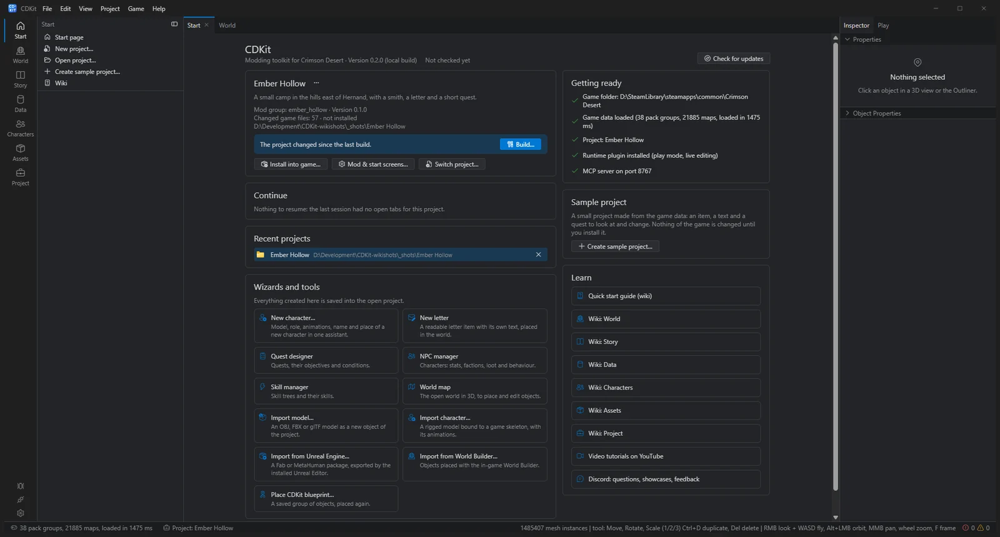

像游戏引擎一样的 3D 世界编辑器
在与游戏一致的流式开放世界中自由飞行。使用操纵器选择、移动、旋转、缩放、复制和删除对象，支持吸附与完整撤销。还可从 49,000+ 预制体浏览器中直接拖入建筑、道具和树木。

在 3D 中编辑开放世界、塑造地形、编写任务、加入你自己的角色——然后一键安装到游戏中，也能同样轻松地移除。

从移动一个木桶，到制作拥有独立角色的新任务线——CDKit 覆盖从创意到模组安装完成的整个流程。
在与游戏一致的流式开放世界中自由飞行。使用操纵器选择、移动、旋转、缩放、复制和删除对象，支持吸附与完整撤销。还可从 49,000+ 预制体浏览器中直接拖入建筑、道具和树木。

抬高、降低或平整地面，用笔刷绘制材质和森林。构建时导航数据与世界地图会同步更新。
以目标流程的方式查看任务。编辑任务内容、奖励、对话、条件和语音，或从模板创建新任务。
助手可接收 FBX、glTF、Collada 或 MetaHuman 模型，将其绑定到游戏骨骼、映射动画并放置到世界中。
重命名和调整物品平衡，修改价格与能力，为商人补货，并决定敌人和宝箱的掉落内容。
按下 F5，游戏会直接启动当前编辑场景、安装你的模组，并让角色出现在你正在编辑的位置。
修改游戏任意语言中的任意文本。只需一个按钮，即可并排查看同一文本的所有语言版本。
访问游戏中的所有数据表，支持搜索、批量编辑，并可通过 CSV 与 Excel 或 Google Sheets 往返编辑。
编写玩家可拾取阅读的信件与卷轴，并把它们放置在世界中的任意位置。
七个任务区域，每个物品、任务和 NPC 都有自己的标签页，命令面板可以找到一切，崩溃后可恢复——深色或浅色主题任选。
无需十六进制编辑，也无需手动解包归档。CDKit 直接理解游戏格式，让你专注于模组本身。
开放世界会围绕相机流式加载地形、植被、天空和所有对象，与游戏中的呈现一致。
你的工作内容保存在项目文件夹中。CDKit 会将其构建为额外的数据包，让游戏在自身数据之上加载。
选择文件夹和名称。从此之后的所有修改都会集中保存在这里，便于备份、版本管理和分享。
使用世界编辑器、任务设计器、物品编辑器和各类助手。任何操作都可撤销，可在 3D 中预览，也可通过游玩模式测试。
关闭游戏，点击 安装，然后开始游戏。改变主意了？ 卸载 即可让游戏恢复到原来的状态。
模组是位于游戏文件夹之外的独立包。CDKit 的小型运行时（cdkit.asi）在游戏运行时把它们提供给游戏——不会修改任何一个原始游戏文件。卸载即刻移除，游戏更新和 Steam 文件校验不再删除你的模组，多个模组可以同时加载，并列出每一处冲突。
模组覆盖加载在游戏之上，一键即可移除。
修改以“变更”而非文件副本的形式保存——游戏更新后重新构建即可。
新版本会连同更新说明显示在启动页——一键完成校验下载并重启。

CDKit 内置 MCP 接口。Claude 等 AI 助手可以读取编辑器显示的内容、操作控件、移动 3D 相机、编辑表格并截取截图——所有操作仅发生在你电脑上的 CDKit 内，每一步都会高亮显示并可撤销。
如何连接 →是的。下载并解压，然后运行 CDkit.exe ——无需账号，也无需安装程序。
不会修改任何原始游戏文件。CDKit 将你的模组构建到它自己的文件夹中，其运行时 cdkit.asi（由 bin64 中的 ASI 加载器加载）在游戏运行时把它们提供给游戏。卸载即刻移除一切，游戏更新或 Steam 的“验证游戏文件的完整性”不再删除你的模组。游玩模式会阻止存档，测试期间你的存档保持安全。
Windows 10 或 11（64 位）、Steam 版《红色沙漠》以及支持 DirectX 12 的显卡。游玩模式和实时预览还会使用 World Builder 插件；导入 MetaHuman/Fab 包需要 Unreal Engine。
不需要。移动对象、修改物品、编辑任务和文本等大多数操作都可通过表单和鼠标完成。导入自制模型时只需准备 3D 文件，其余步骤由助手处理。
Steam 会重置游戏的数据包列表，因此模组会暂时失效。在 CDKit 中打开项目，点击 Build 和 Install——绝大多数情况下你的修改都可以继续使用。
可以。分享你的项目文件夹；其他人在 CDKit 中打开并点击 Install，CDKit 会针对他们的游戏版本重新构建。